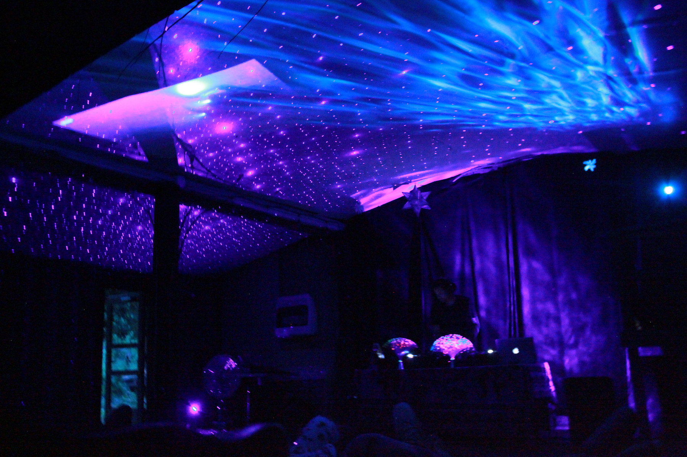
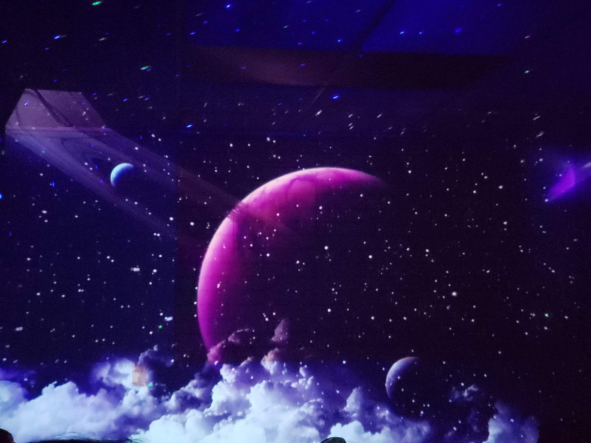

Let’s go on an audio adventure together:) Join us as we dive under the sea, out into space and into our minds. Chill out and experience the vibes of our blue planet or the great beyond through sight and sound using special lighting effects, music and sound effects. Bring a mat or pillow if you'd like and get lost under an audio blanket. Whether you choose to meditate, rest, daydream or brainstorm this is an experience to stimulate our minds and imaginations alike.
